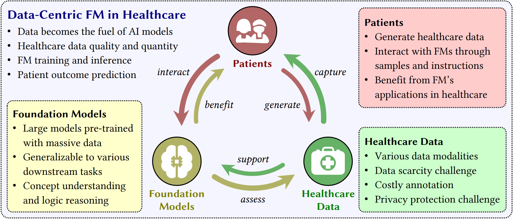
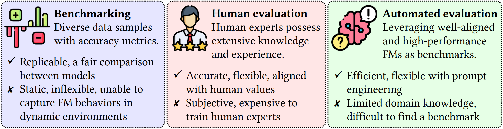

The advent of foundation models (FMs) as an emerging suite of AI techniques has struck a wave of opportunities in computational healthcare. The interactive nature of these models, guided by pre-training data and human instructions, has ignited a data-centric AI paradigm that emphasizes better data characterization, quality, and scale. In healthcare AI, obtaining and processing high-quality clinical data records has been a longstanding challenge, ranging from data quantity, annotation, patient privacy, and ethics. In this survey, we investigate a wide range of data-centric approaches in the FM era (from model pre-training to inference) towards improving the healthcare workflow. We discuss key perspectives in AI security, assessment, and alignment with human values. Finally, we offer a promising outlook of FM-based analytics to enhance the performance of patient outcome and clinical workflow in the evolving landscape of healthcare and medicine.
From a data-centric viewpoint, we emphasize the interplay between patients, healthcare data, and foundation models. Patients generate healthcare data and interact with foundation models. Healthcare data captures patient characteristics and supports foundation model training, inference, and deployment. Foundation models assess healthcare data and benefit patients. As illustrated, data-centric strategies promise to reshape clinical workflow , enable precise diagnosis, and uncover insights into treatment.
Healthcare and medical data challenges have posed persistent obstacles over decades, including multi-modality data fusion, limited data volume, annotation burden, and the critical concern of patient privacy protection. To respond, the foundation model era opens up perspectives to advance data-focused AI analytics in healthcare.
We provide an up-to-date list of healthcare foundation models in our survey paper (Appendix B) and GitHub page.
Foundation models can enable a more scalable, generalizable, and comprehensive multi-modal healthcare data fusion. Conventional fusion approaches are enhanced by joint-modal pre-training and comprehensive foundation models such as LLMs, enabling downstream applications such as medical QA, drug discovery, and diagnosis.
Foundation models can handle multiple modalities via pre-training on massive-scale paired multi-modal data in a joint-modal mode to obtain a high-level understanding of inter-modality relationships.
Transformer-style LLMs possess powerful semantic understanding capability via the attention mechanism, which can be transferred to multi-modal settings. Data from different modalities can be aggregated as the prompt input of an LLM.
Foundation model evaluation is challenging owing to the models' extensive utilization given their own model scale and complexity. Three common evaluation strategies include benchmarking, human evaluation, and automated evaluation.
We provide an up-to-date list of healthcare benchmarks for foundation model evaluation in our survey paper (Table 1) and GitHub page.
In this survey, we have offered an overview of FM challenges from a data-centric perspective. FMs possess great potential to mitigate data challenges in healthcare, including data imbalance and bias, data scarcity, and high annotation costs. Due to FM's strong content generation capabilities, there is a remarkable need for greater vigilance regarding data privacy, data bias, and ethical considerations about the generated medical knowledge. Only by adequately and reliably addressing the data-centric challenges can we better leverage the power of FMs across a broader scope of medicine and healthcare.
If you find this project helps, please kindly cite our survey, thanks!
@article{zhang2024data,
title={Data-Centric Foundation Models in Computational Healthcare: A Survey},
author={Zhang, Yunkun and Gao, Jin and Tan, Zheling and Zhou, Lingfeng and Ding, Kexin and Zhou, Mu and Zhang, Shaoting and Wang, Dequan},
journal={arXiv preprint arXiv:2401.02458},
year={2024}
}